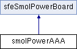

#include <SparkFun_smol_Power_Board.h>
Inheritance diagram for smolPowerAAA:

Public Member Functions | |
| smolPowerAAA () | |
| Create an object to communicate with the SparkFun smôl Power Board AAA. | |
| bool | begin (byte deviceAddress=SFE_SMOL_POWER_DEFAULT_I2C_ADDRESS, TwoWire &wirePort=Wire) |
| Begin communication with the SparkFun smôl Power Board. More... | |
| float | getBatteryVoltage () |
| Read the ATtiny43U's battery voltage (VBAT). More... | |
 Public Member Functions inherited from sfeSmolPowerBoard Public Member Functions inherited from sfeSmolPowerBoard | |
| bool | isConnected () |
| Class to communicate with the SparkFun smôl Power Boards. More... | |
| bool | setI2CAddress (byte address) |
| Change the smôl Power Board AAA's I2C address. You will need to call .begin again using the new address to re-establish communication with the Power Board. More... | |
| byte | getI2CAddress () |
| Just for fun, read back the Power Board's I2C address. This proves that I2C communication is possible and that the Power Board has the correct address stored in eeprom. More... | |
| byte | getResetReason () |
| Read the reason for the ATtiny's most recent reset. More... | |
| float | getTemperature () |
| Read the ATtiny's internal temperature. TO DO: Add temperature calibration / correction functionality. More... | |
| float | measureVCC () |
| Measure the ATtiny43U's VCC by reading the 1.1V internal reference via the ADC. More... | |
| bool | setADCVoltageReference (sfe_power_board_ADC_ref_e ref) |
| Set the ATtiny43U's ADC voltage reference to VCC or the internal 1.1V reference. More... | |
| sfe_power_board_ADC_ref_e | getADCVoltageReference () |
| Get the ATtiny43U's ADC voltage reference: VCC or the internal 1.1V reference. More... | |
| bool | setWatchdogTimerPrescaler (sfe_power_board_WDT_prescale_e prescaler) |
| Set the ATtiny43U's Watchdog Timer prescaler to set the WDT interrupt rate. More... | |
| sfe_power_board_WDT_prescale_e | getWatchdogTimerPrescaler () |
| Get the ATtiny43U's Watchdog Timer prescaler setting. More... | |
| bool | setPowerdownDurationWDTInts (uint16_t duration) |
| Set the Power Board Power-down duration in Watchdog Timer interrupts. More... | |
| bool | getPowerDownDurationWDTInts (uint16_t *duration) |
| Get the Power Board Power-down duration in Watchdog Timer interrupts. More... | |
| bool | powerDownNow () |
| Power down the system now. The smôl bus power will be disabled. The ATtiny43U will wake up and turn the power back on after SFE_SMOL_POWER_REGISTER_POWERDOWN_DURATION WDT interrupts. More... | |
| byte | getFirmwareVersion () |
| Get the Power Board firmware version. More... | |
| byte | computeCRC8 (byte data[], byte len) |
| Given an array of bytes, this calculates the CRC8 for those bytes. From: http://www.sunshine2k.de/articles/coding/crc/understanding_crc.html Tested with: http://www.sunshine2k.de/coding/javascript/crc/crc_js.html x^8+x^5+x^4+1 = 0x31. More... | |
Additional Inherited Members | |
| Public Attributes inherited from sfeSmolPowerBoard | |
| SMOL_POWER_BOARD_IO | smolPowerBoard_io |
Detailed Description
Communication interface for the SparkFun smôl Power Board AAA
Member Function Documentation
◆ begin()
| bool smolPowerAAA::begin | ( | byte | deviceAddress = SFE_SMOL_POWER_DEFAULT_I2C_ADDRESS, |
| TwoWire & | wirePort = Wire |
||
| ) |
Begin communication with the SparkFun smôl Power Board.
- Parameters
-
deviceAddress The I2C address of the Power Board. Default is SFE_POWER_BOARD_DEFAULT_I2C_ADDRESS 0x50. Can be changed with setI2CAddress. wirePort The TwoWire (I2C) port used to communicate with the Power Board. Default is Wire.
- Returns
- True if communication with the Power Board was successful, otherwise false.
◆ getBatteryVoltage()
| float smolPowerAAA::getBatteryVoltage | ( | ) |
Read the ATtiny43U's battery voltage (VBAT).
- Returns
- The battery voltage in Volts or -99.0 if an error occurred.
This function reads two bytes (uint16_t, little endian) from SFE_SMOL_POWER_REGISTER_VBAT. This will be the raw 10-bit ADC reading. We need to manually convert this to voltage using the selected voltage reference. The ADC has a built-in divide-by-2 circuit, so we can measure up to 2*VCC or 2.2V depending on the reference.
The documentation for this class was generated from the following files:
- src/SparkFun_smol_Power_Board.h
- src/SparkFun_smol_Power_Board.cpp